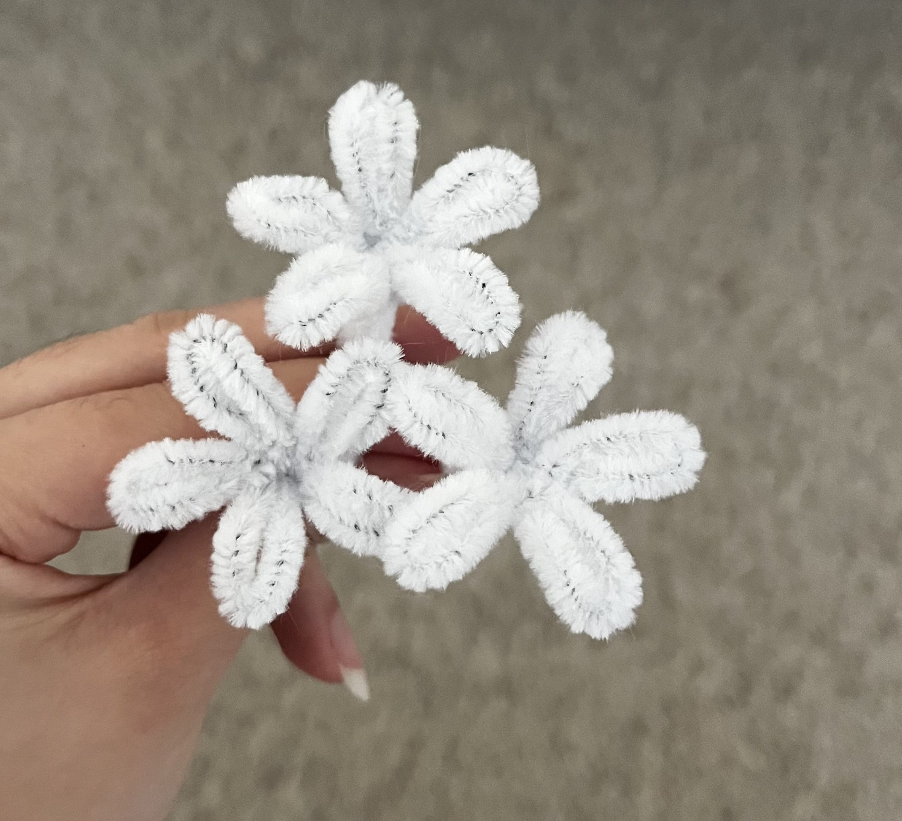
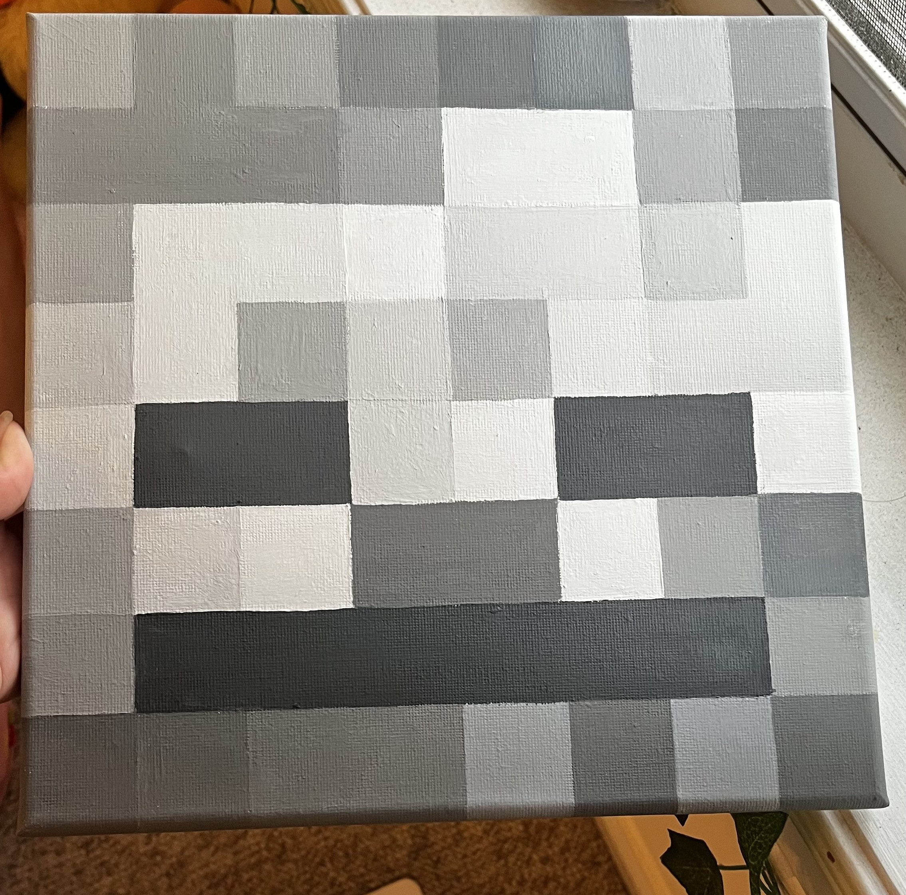
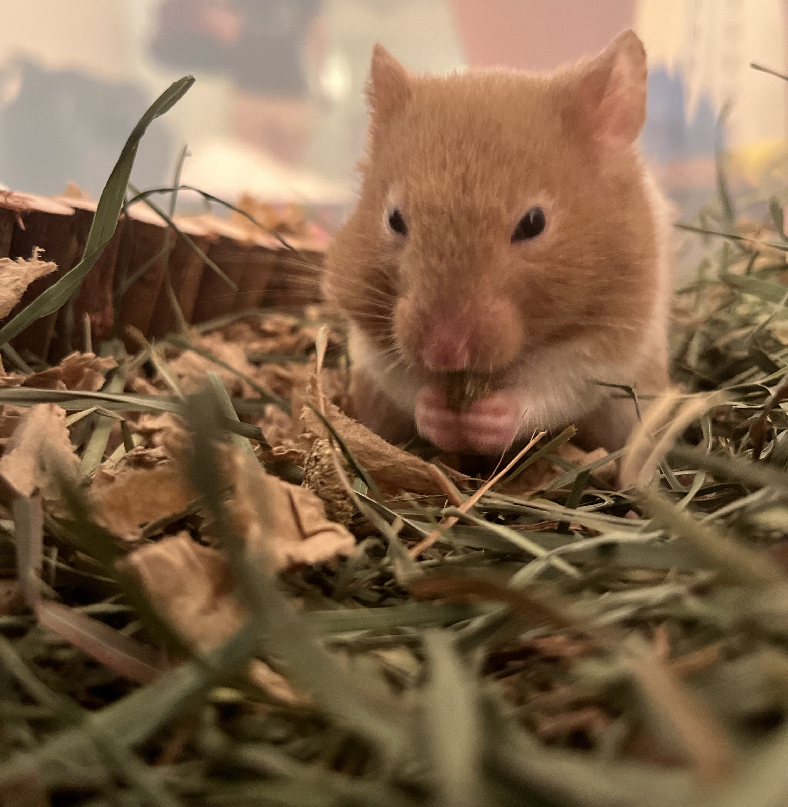
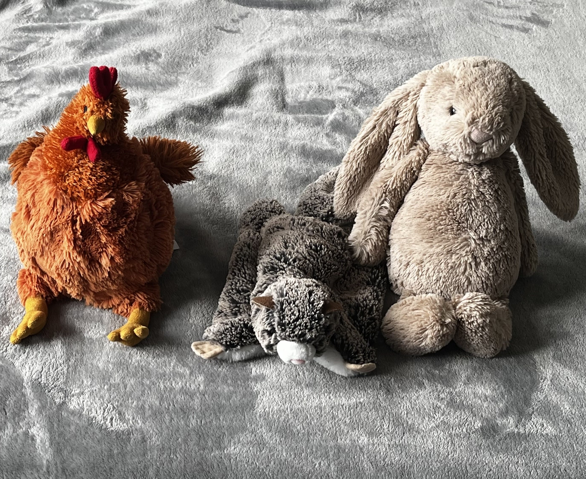

✩ welcome to my portfolio ✩
introduction
Hello, there! I'm Licia and am pleased to invite you into a bit of my
life.
Over the years, I have learned various computer technical skills as a student to prepare for my future
career.
Please, explore my page to learn more about my specializations and personal life!
Also, check out my gallery down below! I've included some pictures of my everyday life.
my gallery



